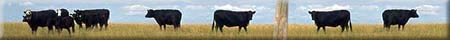
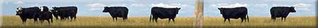

|
More on Forage Crops: Grasses and Legumes What are legumes? Grain legumes/pulse crops are members of family Leguminoseae (pea and bean family). Growth is indeterminate (will flower until a stress [drought/frost/desiccation] stops growth). Clover, alfalfa and trefoil are legumes commonly seeded for reasons other than for seeds. In the graphic, a farmer is mowing a crop of alfalfa which he will leave to dry in the field before bailing. Legumes are a source of protein (feed) and nitrogen (soil fertility). Nitrogen (N) fixation is the most important feature of the legume family; forage legumes have the ability to fix nitrogen and return it to the soil. They are used in various crop rotations to maintain or to increase soil fertility. However, forage legumes need phosphorus for their own growth. Unless this is supplied, growth will decrease after two or three years if stands or fields are allowed to continue. They also need more moisture than grasses and their deep roots can deplete soil moisture quickly. Depletion of phosphorus and moisture around individual plants can thin out fields, so their uses as hay fields or pastures have time limits for efficient production. What are Grasses? Members of the grass family (Gramineae) produce large edible grains either for human or livestock consumption. The grain or seed is an edible fruit, consisting of the endosperm and the embryo (or germ). The endosperm is stored food and makes up the majority of the seed. Grains are rich in carbohydrates and contain substantial amounts of protein, as well as some fat and vitamins.
|
||